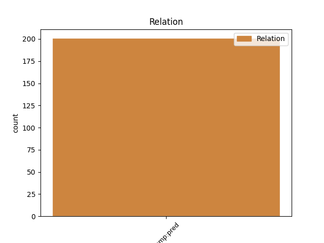
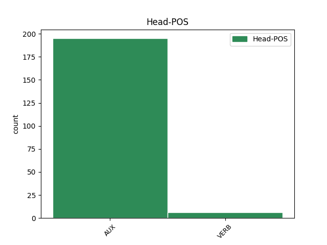
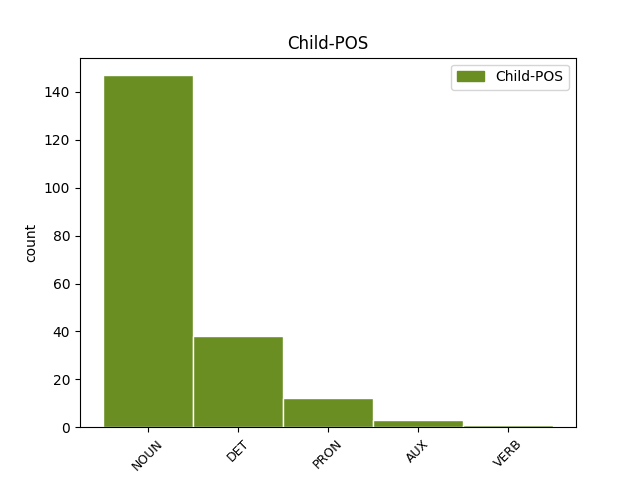

Distribution of features within this leaf



Agreement Rules sorted by frequency.
- When the dependent token is the predicative complements(comp:pred) of the head token, and the dependent token is NOUN.
1 eee _ _ _ _ 0 _ _ _
2 jaz _ _ _ _ 0 _ _ _
3 mislim _ _ _ _ 0 _ _ _
4 da _ _ _ _ 0 _ _ _
5 ni _ _ _ _ 0 _ _ _
6 eee _ _ _ _ 0 _ _ _
7 da _ _ _ _ 0 _ _ _
8 je biti AUX Va-r3s-n Mood=Ind|Number=Sing|Person=3|Polarity=Pos|Tense=Pres|VerbForm=Fin 0 _ _ _
9 zelo _ _ _ _ 0 _ _ _
10 dobra _ _ _ _ 0 _ _ _
11 smučarka smučarka NOUN Ncfsn Case=Nom|Gender=Fem|Number=Sing 8 comp:pred _ msd=Sozei|word=smučarka
12 in _ _ _ _ 0 _ _ _
13 vsestranska _ _ _ _ 0 _ _ _
1 dobro _ _ _ _ 0 _ _ _
2 ne _ _ _ _ 0 _ _ _
3 vem _ _ _ _ 0 _ _ _
4 kakšni kakšen DET Pq-mpn Case=Nom|Gender=Masc|Number=Plur|PronType=Int 5 comp:pred _ msd=Zv-mmi|word=kakšni
5 so biti AUX Va-r3p-n Mood=Ind|Number=Plur|Person=3|Polarity=Pos|Tense=Pres|VerbForm=Fin 0 _ _ _
6 tvoji _ _ _ _ 0 _ _ _
7 problemi _ _ _ _ 0 _ _ _
8 ampak _ _ _ _ 0 _ _ _
9 eee _ _ _ _ 0 _ _ _
10 ja _ _ _ _ 0 _ _ _
11 [all:laughter] _ _ _ _ 0 _ _ _
1 kaj kaj PRON Pq-nsn Case=Nom|Gender=Neut|Number=Sing|PronType=Int 3 comp:pred _ msd=Zv-sei|word=kaj
2 pa _ _ _ _ 0 _ _ _
3 je biti AUX Va-r3s-n Mood=Ind|Number=Sing|Person=3|Polarity=Pos|Tense=Pres|VerbForm=Fin 0 _ _ _
4 to _ _ _ _ 0 _ _ _
5 ? _ _ _ _ 0 _ _ _
1 in _ _ _ _ 0 _ _ _
2 seveda _ _ _ _ 0 _ _ _
3 vlekel _ _ _ _ 0 _ _ _
4 sem _ _ _ _ 0 _ _ _
5 vprašanja _ _ _ _ 0 _ _ _
6 noter _ _ _ _ 0 _ _ _
7 in _ _ _ _ 0 _ _ _
8 sem _ _ _ _ 0 _ _ _
9 gledal _ _ _ _ 0 _ _ _
10 samo _ _ _ _ 0 _ _ _
11 da _ _ _ _ 0 _ _ _
12 izvlečem _ _ _ _ 0 _ _ _
13 da _ _ _ _ 0 _ _ _
14 popravljam _ _ _ _ 0 _ _ _
15 jaz _ _ _ _ 0 _ _ _
16 da _ _ _ _ 0 _ _ _
17 je _ _ _ _ 0 _ _ _
18 tekst _ _ _ _ 0 _ _ _
19 pa _ _ _ _ 0 _ _ _
20 da _ _ _ _ 0 _ _ _
21 jaz _ _ _ _ 0 _ _ _
22 popravim _ _ _ _ 0 _ _ _
23 kje _ _ _ _ 0 _ _ _
24 je _ _ _ _ 0 _ _ _
25 treba _ _ _ _ 0 _ _ _
26 vejica _ _ _ _ 0 _ _ _
27 kje _ _ _ _ 0 _ _ _
28 je _ _ _ _ 0 _ _ _
29 treba _ _ _ _ 0 _ _ _
30 dvopičje _ _ _ _ 0 _ _ _
31 ne _ _ _ _ 0 _ _ _
32 pa _ _ _ _ 0 _ _ _
33 da _ _ _ _ 0 _ _ _
34 da _ _ _ _ 0 _ _ _
35 jaz _ _ _ _ 0 _ _ _
36 delam _ _ _ _ 0 _ _ _
37 kaj _ _ _ _ 0 _ _ _
38 je _ _ _ _ 0 _ _ _
39 eee _ _ _ _ 0 _ _ _
40 osebek _ _ _ _ 0 _ _ _
41 povedek _ _ _ _ 0 _ _ _
42 te _ _ _ _ 0 _ _ _
43 pa _ _ _ _ 0 _ _ _
44 sem _ _ _ _ 0 _ _ _
45 ni _ _ _ _ 0 _ _ _
46 mi _ _ _ _ 0 _ _ _
47 nekako _ _ _ _ 0 _ _ _
48 nisem _ _ _ _ 0 _ _ _
49 ni _ _ _ _ 0 _ _ _
50 [gap] _ _ _ _ 0 _ _ _
51 nisem biti AUX Va-r1s-y Mood=Ind|Number=Sing|Person=1|Polarity=Neg|Tense=Pres|VerbForm=Fin 0 _ _ _
52 tu _ _ _ _ 0 _ _ _
53 jaz _ _ _ _ 0 _ _ _
54 bil biti AUX Va-p-sm Gender=Masc|Number=Sing|VerbForm=Part 51 comp:pred _ msd=Gp-d-em|word=bio
55 cel _ _ _ _ 0 _ _ _
56 ne _ _ _ _ 0 _ _ _
Disagree Examples:
1 ma _ _ _ _ 0 _ _ _
2 tista _ _ _ _ 0 _ _ _
3 glavna _ _ _ _ 0 _ _ _
4 pjevačica _ _ _ _ 0 _ _ _
5 ni _ _ _ _ 0 _ _ _
6 glih _ _ _ _ 0 _ _ _
7 glavna _ _ _ _ 0 _ _ _
8 v _ _ _ _ 0 _ _ _
9 tem _ _ _ _ 0 _ _ _
10 komadu _ _ _ _ 0 _ _ _
11 mislim _ _ _ _ 0 _ _ _
12 da _ _ _ _ 0 _ _ _
13 so biti AUX Va-r3p-n Mood=Ind|Number=Plur|Person=3|Polarity=Pos|Tense=Pres|VerbForm=Fin 0 _ _ _
14 oni _ _ _ _ 0 _ _ _
15 štirje _ _ _ _ 0 _ _ _
16 srce srce NOUN Ncnsn Case=Nom|Gender=Neut|Number=Sing 13 comp:pred _ msd=Sosei|word=srce
17 pesmi _ _ _ _ 0 _ _ _
1 to ta DET Pd-nsn Case=Nom|Gender=Neut|Number=Sing|PronType=Dem 2 comp:pred _ msd=Zk-sei|word=to
2 so biti AUX Va-r3p-n Mood=Ind|Number=Plur|Person=3|Polarity=Pos|Tense=Pres|VerbForm=Fin 0 _ _ _
3 ljudje _ _ _ _ 0 _ _ _
4 ki _ _ _ _ 0 _ _ _
5 imajo _ _ _ _ 0 _ _ _
6 globlje _ _ _ _ 0 _ _ _
7 eee _ _ _ _ 0 _ _ _
8 pobude _ _ _ _ 0 _ _ _
9 za _ _ _ _ 0 _ _ _
10 za _ _ _ _ 0 _ _ _
11 storitev _ _ _ _ 0 _ _ _
12 tega _ _ _ _ 0 _ _ _
13 dejanja _ _ _ _ 0 _ _ _
14 in _ _ _ _ 0 _ _ _
15 brez _ _ _ _ 0 _ _ _
16 skrbi _ _ _ _ 0 _ _ _
17 bodite _ _ _ _ 0 _ _ _
18 da _ _ _ _ 0 _ _ _
19 jim _ _ _ _ 0 _ _ _
20 hujša _ _ _ _ 0 _ _ _
21 zagrožena _ _ _ _ 0 _ _ _
22 kazen _ _ _ _ 0 _ _ _
23 ne _ _ _ _ 0 _ _ _
24 bo _ _ _ _ 0 _ _ _
25 preprečila _ _ _ _ 0 _ _ _
26 da _ _ _ _ 0 _ _ _
27 to _ _ _ _ 0 _ _ _
28 naredijo _ _ _ _ 0 _ _ _
1 kar _ _ _ _ 0 _ _ _
2 je _ _ _ _ 0 _ _ _
3 prikazano _ _ _ _ 0 _ _ _
4 na _ _ _ _ 0 _ _ _
5 tej _ _ _ _ 0 _ _ _
6 simulaciji _ _ _ _ 0 _ _ _
7 je biti AUX Va-r3s-n Mood=Ind|Number=Sing|Person=3|Polarity=Pos|Tense=Pres|VerbForm=Fin 0 _ _ _
8 da _ _ _ _ 0 _ _ _
9 imate imeti VERB Vmpr2p-n Aspect=Imp|Mood=Ind|Number=Plur|Person=2|Polarity=Pos|Tense=Pres|VerbForm=Fin 7 comp:pred _ msd=Ggnsdm-n|word=mate
10 na _ _ _ _ 0 _ _ _
11 levi _ _ _ _ 0 _ _ _
12 strani _ _ _ _ 0 _ _ _
13 se _ _ _ _ 0 _ _ _
14 pravi _ _ _ _ 0 _ _ _
15 tukajle _ _ _ _ 0 _ _ _
16 imate _ _ _ _ 0 _ _ _
17 pogled _ _ _ _ 0 _ _ _
18 opsala _ _ _ _ 0 _ _ _
19 malo _ _ _ _ 0 _ _ _
20 smo _ _ _ _ 0 _ _ _
21 odjadrali _ _ _ _ 0 _ _ _
1 ja _ _ _ _ 0 _ _ _
2 zdajle _ _ _ _ 0 _ _ _
3 ima _ _ _ _ 0 _ _ _
4 kolektivnega _ _ _ _ 0 _ _ _
5 imajo _ _ _ _ 0 _ _ _
6 v _ _ _ _ 0 _ _ _
7 naš _ _ _ _ 0 _ _ _
8 pa _ _ _ _ 0 _ _ _
9 tistih _ _ _ _ 0 _ _ _
10 eee _ _ _ _ 0 _ _ _
11 eee _ _ _ _ 0 _ _ _
12 plače _ _ _ _ 0 _ _ _
13 je biti AUX Va-r3s-n Mood=Ind|Number=Sing|Person=3|Polarity=Pos|Tense=Pres|VerbForm=Fin 0 _ _ _
14 petdeset _ _ _ _ 0 _ _ _
15 procentov procent NOUN Ncmpg Case=Gen|Gender=Masc|Number=Plur 13 comp:pred _ msd=Sommr|word=procent
16 kar _ _ _ _ 0 _ _ _
17 si _ _ _ _ 0 _ _ _
18 doma _ _ _ _ 0 _ _ _
19 ne _ _ _ _ 0 _ _ _
1 sedem _ _ _ _ 0 _ _ _
2 minut _ _ _ _ 0 _ _ _
3 je _ _ _ _ 0 _ _ _
4 še _ _ _ _ 0 _ _ _
5 do _ _ _ _ 0 _ _ _
6 pol _ _ _ _ 0 _ _ _
7 osmih _ _ _ _ 0 _ _ _
8 kadilci _ _ _ _ 0 _ _ _
9 so _ _ _ _ 0 _ _ _
10 danes _ _ _ _ 0 _ _ _
11 na _ _ _ _ 0 _ _ _
12 boljšem _ _ _ _ 0 _ _ _
13 kot _ _ _ _ 0 _ _ _
14 so _ _ _ _ 0 _ _ _
15 bili _ _ _ _ 0 _ _ _
16 vso _ _ _ _ 0 _ _ _
17 zimo _ _ _ _ 0 _ _ _
18 kajti _ _ _ _ 0 _ _ _
19 sonce _ _ _ _ 0 _ _ _
20 jih _ _ _ _ 0 _ _ _
21 pridno _ _ _ _ 0 _ _ _
22 greje _ _ _ _ 0 _ _ _
23 in _ _ _ _ 0 _ _ _
24 zdajle _ _ _ _ 0 _ _ _
25 je biti AUX Va-r3s-n Mood=Ind|Number=Sing|Person=3|Polarity=Pos|Tense=Pres|VerbForm=Fin 0 _ _ _
26 že _ _ _ _ 0 _ _ _
27 šest _ _ _ _ 0 _ _ _
28 sedem _ _ _ _ 0 _ _ _
29 stopinj stopinja NOUN Ncfpg Case=Gen|Gender=Fem|Number=Plur 25 comp:pred _ msd=Sozmr|word=stopinj